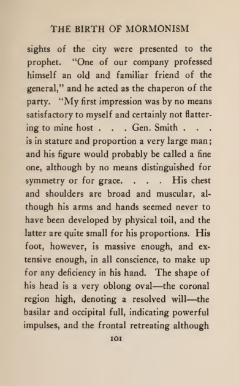

Look closely · Follow the evidence
01 Face length and breadth
In our portrait. Long oval face, broad upper face narrowing toward the chin.
The historical evidence. Masks and the Gazette transcription constrain broad shape; no pose-controlled ratios for this image were established. [1, 11]
Our assessment. Retain; no justified narrowing or widening.

Adopted portrait · native-source detail
The adopted face outline
The upper and lower face can be compared without changing the artwork. Detail window of the unchanged modern portrait; open the complete image for context.

Historical cast photograph · detail
Joseph’s surviving face outline
The complete facial contour remains visible, including surface damage. BYU item 4109, catalogued 2001; courtesy of LDS Church Archives, public-domain designation. This photograph is a later comparison source, not an established original creation input.
View the BYU catalogue and rights recordRead the museum’s mask historyContinue this research chapter

Historical document · later printing
An oval described in a later transcription
The closing lines describe shape; the accompanying phrenological claims are not accepted anatomical evidence. The Birth of Mormonism, 1916, appendix C, printed p. 101. This later book attributes the description to an April 1844 letter printed in the Saint Louis Weekly Gazette; the original newspaper issue remains unverified.
Read the complete source pageRead the later book’s attributionContinue this research chapter
The portrait has a long oval outline, broad above and narrower toward the chin. Joseph’s surviving cast offers a useful contour reference; the later transmission of the Gazette description also calls his head an oblong oval. [1, 11]
This explains a resemblance visible today. It does not recover the original artist’s individual decisions.
What this can and cannot tell us
Different views, postmortem changes and cast condition prevent a measured face-width match.